Nuestra misión
Somos los guardianes de la información. Debemos configurar la infraestructura central: El Firewall que protege la red y los servidores donde se aloja la web y los archivos de la empresa. Nada sale de nuestra red sin estar cifrado.
Nuestras tareas detalladas:
- Configuración de red: Levantar el Firewall (pfSense) y crear una red interna "DMZ" para el servidor.
- Solicitud de identidad: Generar claves privadas y peticiones de certificado (.csr) para nuestro servidor web y para la VPN. Pasarlas al Grupo A por Pendrive
- Túnel de comunicación: Configurar el extremo del túnel VPN (IPsec) para conectar con la sede remota (Grupo C)
- Servicios seguros: Configurar un servidor Apache/Nginx solo por HTTPS y un servidor SFTP
- Control de Acceso:Configurar reglas de Firewall que solo permitan la entrada a través de la VPN
Nuestra misión
Para empezar las tareas hemos dividido el trabajo equitativamente en cuatro partes, cada una con una responsabilidad técnica y una de apoyo:
🧑💼 Kinso: infraestructura y conectividad (el "router") es la base del proyecto. Se encarga de que los cables virtuales funcionen. Tarea técnica: instalar el rol de acceso remoto (RRAS) y configurar la VPN Site-to-Site con el grupo C. tarea de apoyo: Configurar el enrutamiento interno para que el tráfico sepa hacia dónde ir.
-
Instalación del rol: Empecé instalando el servicio de Acceso remoto (RRAS) en el Windows Server para poder gestionar el enrutamiento y la VPN (Decidí utilizar windows server 22 aprovechando que ya lo tyenía instalado y tb por que así ya utilizamos el firewall de Windows).
-
Configuración del túnel: Creé una nueva interfaz de red de "marcado a demanda". Elegí el protocolo IKEv2 porque es el más seguro para conectar dos sedes de forma permanente (Site-to-Site).
-
Seguridad (PSK): Para que la conexión sea privada, configuré una clave previamente compartida (preshared key). Es la contraseña que ambos grupos tenemos que poner igual para que el túnel se abra.
-
Intercambio de datos: Fui a hablar con el Grupo C para pasarles mis datos (mi IP externa y mi red interna) y apuntar los suyos. Esto es fundamental para que los dos servidores sepan a quién están llamando.
-
Puesta en marcha: Una vez tuve sus datos reales, actualicé la IP de destino en mi servidor y conecté la interfaz. Comprobé que el estado cambiara a "Conectado", lo que significa que el tráfico ya fluye cifrado entre las dos redes.
-
Gestión del grupo: Por último, coordiné con mis compañeros para que usaran mi IP (10.0.0.1) como su puerta de enlace. Así, todo lo que ellos hagan (web, archivos, etc.) sale de forma segura por el túnel que yo he montado.
🧑💼 Cristian: seguridad y perímetro (el "escudo") se asegura de que el servidor sea una fortaleza. Tarea técnica: configurar el Windows Defender Firewall con seguridad avanzada. Crear reglas de entrada y salida personalizadas. tarea de apoyo: realizar el hardenning (cerrar puertos innecesarios y servicios que no se usen).
Reglas de entrada y salida de VPN y bloqueo de puertos
-
Lo primero es saber el rango de IPs que operan en la VPN para definir el ámbito que abarcan las reglas a crear.
-
El siguiente paso es, desde el panel de administrador ir a herramientas y a Windows Defender Firewall con seguridad avanzada.
-
En la ventana que se abre creamos las reglas de entrada y salida que necesitamos y las configuramos para que las conexiones sólo se permitan en el rango de IPs deseado, configurable en las propiedades, en la pestaña de “ámbito” de cada regla.
Las reglas se aplican a los siguientes puertos:- VPN UDP 500/4500
- RDP (Escritorio remoto) TCP 3389
- WinRM (Windows Remote Management) TCP 5985/5986
- SMB (Server Message Block) TCP 445
- SQL Server TCP 1433
- SSH (Secure Shell) TCP 22
- HTTP TDP/UDP 80
- FTP (para Filezilla) TCP/UDP 14148
- También se crean reglas para bloquear las conexiones que no estén dentro del rango establecido.
- Así mismo, es recomendable bloquear los puertos de servicios que no serán necesarios. Por ejemplo, si no existen impresoras agregadas al dominio, los puertos correspondientes se bloquean mediante reglas. Si en el futuro se necesita, se puede modificar dicha regla.
🧑💼 Saúl: criptografía y gestión (el "Notario") es el encargado de la identidad y de que la comunicación entre grupos fluya. Tarea técnica: generar las claves y el CSR (OpenSSL o IIS). Instalar el certificado final una vez firmado. Tarea de apoyo: gestionar el protocolo de pendrive. Debe negociar con el grupo A (CA) y entregar los datos al Grupo C.
-
Primero de todo nos registramos en la web de SSLMANAGER.COM , y lo descargamos en nuestro Windows Server 22 a traves de la pagina web de WWW.SSL.COM , buscando SSL MANAGER
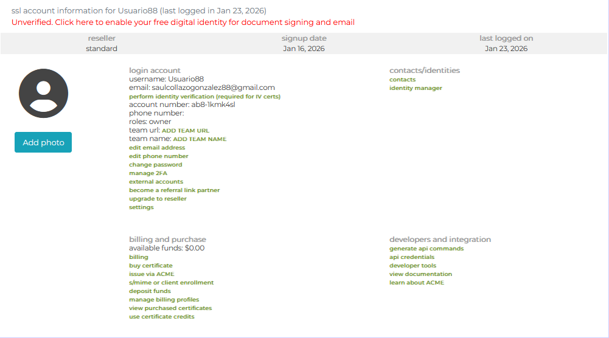
-
Después del primer paso ,entramos en el programa y vamos al apartado Acount nos aparecera una ventana para iniciar sesión introducimos usuario y contraseña
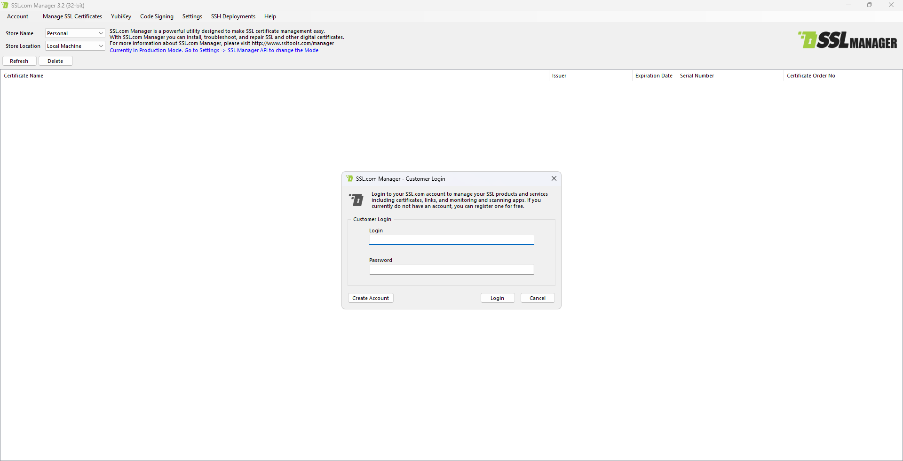
-
En este siguinete paso iremos a el apartado MANAGE SSL CERTIFICATES
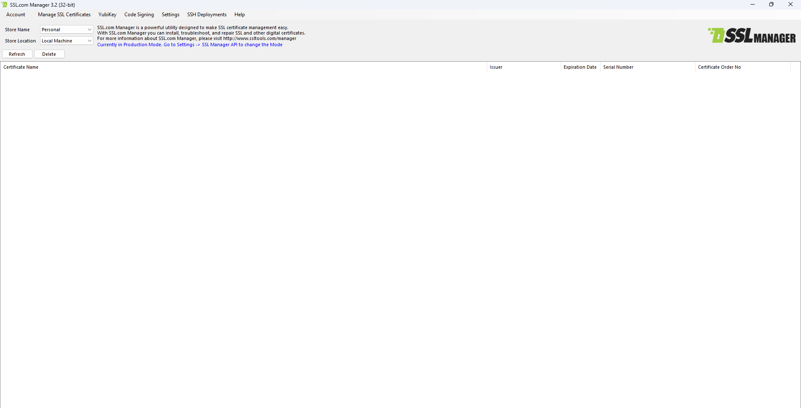
-
Clicaremos y nos aprecera un desplegable en que elegiremos GENERATE SSL CETIFICATES
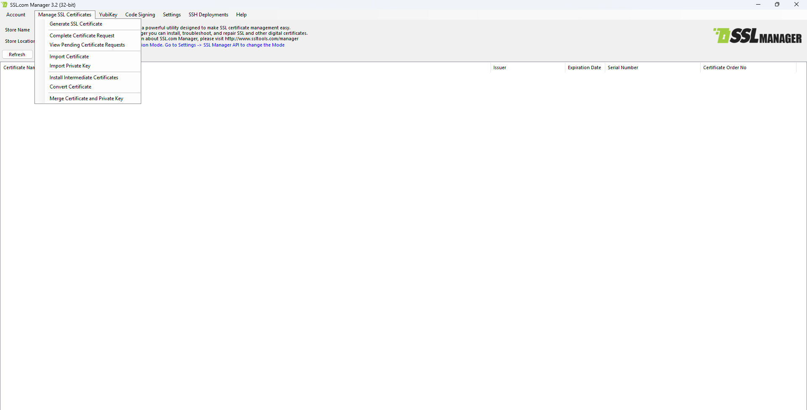
-
En esta parte irmos a GENERATE SSL CERTIFICATER REQUEST y en el nombre de domain (dominio) le eligiremos un nombre con IN delante y con .COM al final , después le damos a exportar elegiendo una ubicación para hacerlo.
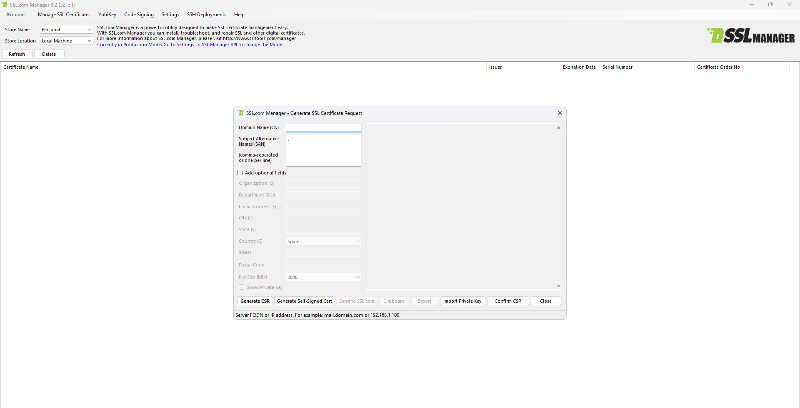
🧑💼 Ezequiel: servicios y almacenamiento (el "host") configura lo que el cliente realmente va a usar. Tarea técnica: instalar y configurar IIS (Web) y el servidor OpenSSH (SFTP). tarea de apoyo: Crear una estructura de carpetas segura y un usuario específico para el acceso SFTP (permisos NTFS).
-
Habilitamos el rol IIS dentro de la administración del servidor
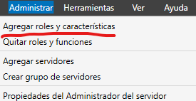
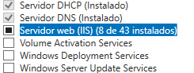
-
Comprobamos su correcto funcionamiento a través de buscarlo en el explorador: HTTPS://localhost
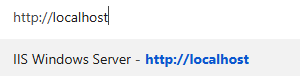
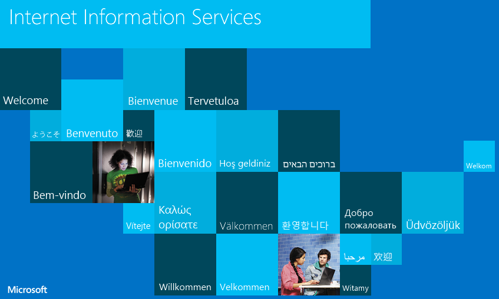
-
A través de Powershell tenemos que instalar OpenSSH
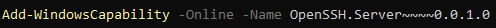
-
Por último establecemos que los servicios arranquen de manera automática
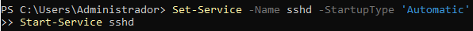